왜 열두 가지나 있을까요? 전파와 숫자 세 개
지하철 카드, 무선 이어폰, 회사 와이파이, 차 키, 스마트 전구, 지하 수도 계량기까지 하루에 무선통신을 열 가지 넘게 써요. 전부 전파로 데이터를 보내는데 왜 하나로 통일하지 않을까요? 영상의 답은 세 가지 욕심이에요. 멀리 보내고, 빨리 보내고, 배터리는 오래 쓰고 싶은데 셋을 한꺼번에 가질 수는 없어요.
주파수가 파장을, 파장이 안테나를 정해요
전파는 1초에 몇 번 출렁이느냐로 이름이 붙어요. 1초에 24억 번이면 2.4GHz예요. 아래 화면의 주황 물결에서 출렁임 한 번이 차지하는 길이가 파장(λ)이에요.
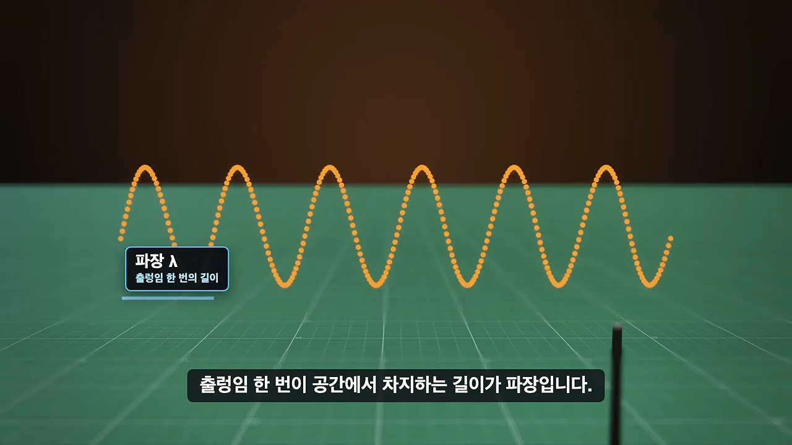
영상이 든 예시를 표로 모으면 이래요. 안테나는 보통 파장의 1/4 길이로 만들어요. 그래서 블루투스 칩 옆엔 손톱만 한 안테나가, IoT 통신 모듈엔 더 긴 안테나가 달려요. 보드 위 꼬불꼬불한 구리 무늬가 바로 안테나예요.
| 주파수 | 파장 | 어디에 쓰나요 |
|---|---|---|
| 2.4GHz | 약 12.5cm (안테나 1/4이면 약 3cm) | 블루투스, 와이파이, 지그비 |
| 920MHz | 약 33cm | LoRa, UHF(Ultra High Frequency) RFID(Radio-Frequency Identification) 근처 |
| 13.56MHz | 약 22m | 교통카드(NFC(Near Field Communication)) |
주파수가 낮으면 벽을 잘 통과하고 멀리 가요. 높으면 벽에 약하지만 한 번에 많이 실을 수 있어요. 도로가 넓을수록 차가 많이 다니는 것과 같아요. 주파수는 나라가 관리하는 공공 자원이지만, 허가 없이 쓰도록 열어 둔 ISM(Industrial, Scientific and Medical) 대역이 있어요. 2.4GHz, 5GHz, 900MHz 근처가 대표적이에요. 오늘 나오는 통신 대부분이 이 비면허 대역을 나눠 써서, 같은 대역에서 서로 부딪히지 않는 게 늘 숙제예요.
0과 1을 싣는 세 가지 방법
전파에 0과 1을 싣는 걸 변조라고 해요. 아래 화면은 같은 비트열 1, 0, 1, 1, 0을 세 방식으로 실은 모습이에요. 맨 위 진폭 변조는 0인 구간에서 물결이 작아져요. 아래 두 줄은 주파수 변조와 위상 변조예요.
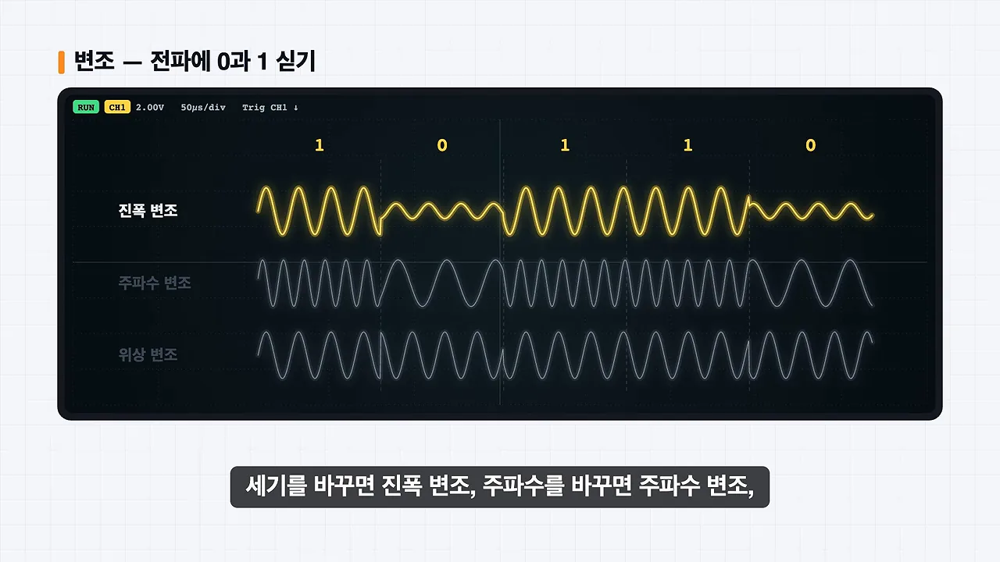
와이파이처럼 빠른 통신은 이걸 수십~수천 개의 작은 주파수에 나눠 싣고, LoRa처럼 멀리 가는 통신은 주파수를 비스듬히 쓸어 올리는 방식을 써요. 둘 다 뒤에서 다시 나와요.
비교에 쓰는 숫자 세 개
첫째는 신호 세기, 단위는 dBm이에요. 1mW를 0dBm으로 놓고 10배 세지면 +10dB, 2배면 +3dB예요. 스마트폰 블루투스는 보통 0~10dBm으로 쏘고, 받는 쪽은 -90dBm, 즉 1mW의 10억분의 1 같은 아주 작은 신호도 잡아요. 아래 그래프는 거리가 1배, 2배, 4배일 때 세기가 1, 1/4, 1/16로 떨어지는 모습이에요.
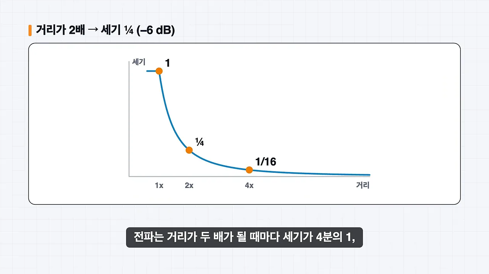
둘째는 속도예요. 한 번에 많이 보내려면 넓은 주파수 폭이 필요하고, 신호가 잡음보다 충분히 세야 해요. 멀수록 신호가 약해지니 속도는 떨어질 수밖에 없어요. 셋째는 전력이에요. 전파를 쏘는 순간 전류를 가장 많이 써요. 그래서 배터리로 몇 년을 버티는 기기는 대부분의 시간을 자고, 아주 잠깐 깨서 짧게 말해요.
이 셋이 줄다리기를 해요. 아래 삼각형의 세 꼭짓점이 멀리, 빠르게, 오래예요. LoRa는 '멀리'와 '오래'를 잡고 '빠르게'를 지웠어요.
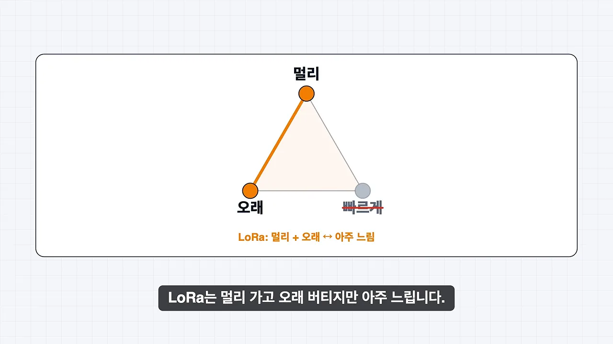
연결 모양도 네 가지로 나뉘어요. 둘이 말하는 일대일, 공유기처럼 하나를 중심으로 모이는 스타형, 서로 말을 전달하는 메시형, 통신사 기지국에 붙는 셀룰러예요. 이 정도만 알면 열두 가지가 깔끔하게 정리된다는 게 영상의 말이에요.
손 닿는 거리: NFC와 RFID
NFC: 배터리 없는 카드가 대답하는 법
교통카드엔 배터리가 없어요. 리더기가 전기를 보내 주기 때문이에요. NFC는 13.56MHz를 써요. 아래 그림처럼 리더 코일에 교류를 흘리면 자기장이 생기고, 가까이 댄 카드 코일에 변압기처럼 전기가 만들어져요. 그 전기로 칩이 깨어나 대답해요.
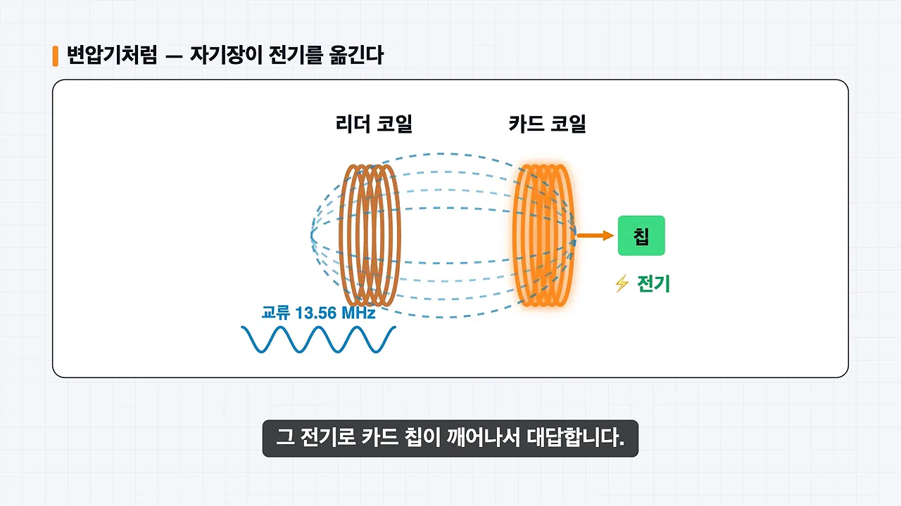
대답은 부하 변조로 해요. 카드가 자기 코일에 걸리는 부하를 켰다 껐다 하면(위쪽 노란 사각파), 리더기 자기장(아래 파란 파형)이 미세하게 흔들려요. 리더기는 그 흔들림을 1, 0, 1, 1, 0으로 읽어요.
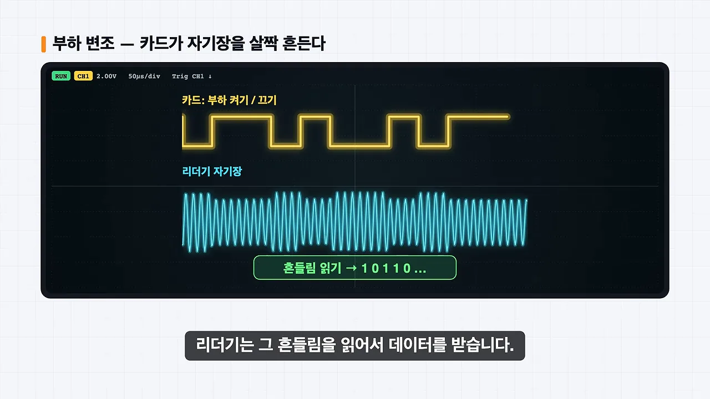
휴대폰 NFC는 세 모드로 동작해요. 화면 왼쪽 카드 세 장이 그 목록이에요. 모드 1은 카드를 읽는 리더, 모드 2는 스스로 카드인 척하는 카드 에뮬레이션(휴대폰 결제), 모드 3은 휴대폰끼리 주고받는 모드인데 요즘은 거의 안 써요.
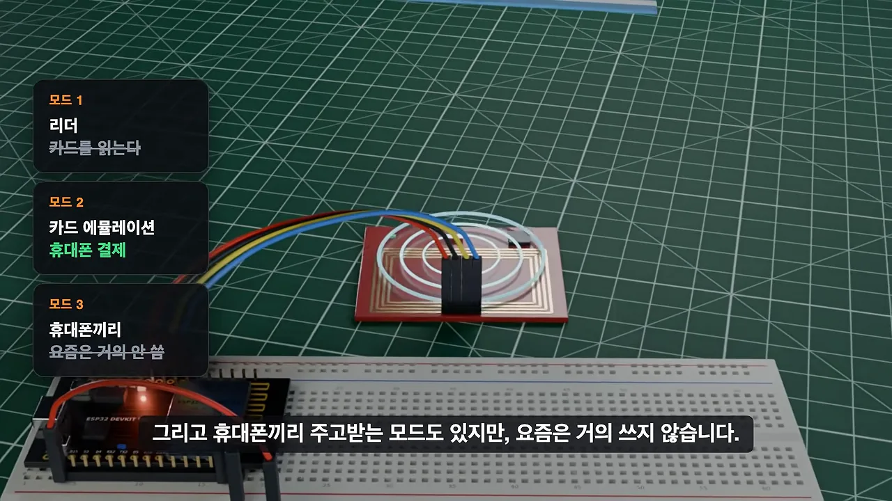
NFC 태그엔 웹 주소나 와이파이 정보를 담는 표준 형식 NDEF(NFC Data Exchange Format)가 있어요. 스티커에 휴대폰을 대면 웹페이지가 열리는 게 이 방식이에요.
현업 실수 첫째는 금속이에요. 아래 그림처럼 안테나 뒤에 금속판이나 배터리가 있으면 자기장이 막혀 거리가 확 줄어요. 그래서 금속 위에 붙이는 태그는 뒤에 페라이트 시트를 깔아요.
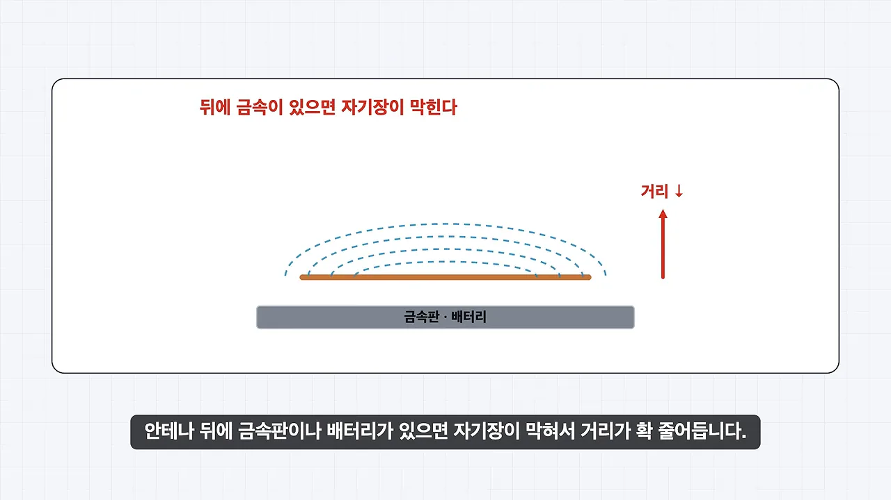
그래서 보드를 설계할 땐 NFC 칩 데이터시트의 안테나 정합 계산을 꼭 따르라고 해요. NFC는 교통카드, 휴대폰 결제, 출입증, 그리고 기기 페어링과 디지털 차 키의 예비 수단으로 써요.
RFID: 수백 개를 한 번에 읽어요
옷 가게 셀프 계산대에 바구니를 넣으면 한 번에 계산되는 건 옷마다 붙은 RFID 태그를 한꺼번에 읽기 때문이에요. RFID는 주파수로 세 가지예요.
| 종류 | 주파수 | 거리·쓰임 |
|---|---|---|
| 저주파(LF(Low Frequency)) | 125kHz 근처 | 몇 cm. 출입 카드, 반려동물 칩 |
| 고주파(HF(High Frequency)) | 13.56MHz | NFC와 같은 집안 |
| UHF | 900MHz 근처 (우리나라 917~920.8MHz) | 보통 수 m, 길게는 10m. 이 장의 주인공 |
UHF 태그도 배터리가 없어요. 리더기가 쏜 전파에서 에너지를 얻어 깨어나요. 그런데 대답은 자기 전파로 하지 않아요. 리더기 전파를 거울처럼 되받아 치면서 반사를 켰다 껐다 해서 0과 1을 만들어요. 이걸 후방 산란이라고 해요. 칩이 아주 작고 싸서 태그 하나가 100원 안팎이에요.
수백 개가 한꺼번에 대답하면 아무것도 못 알아들어요. 그래서 리더기가 순서를 정해요. 아래 화면의 타일 열두 개가 태그이고, 각자 주사위처럼 번호를 하나씩 뽑았어요. 0번이 나온 태그만 대답해요.
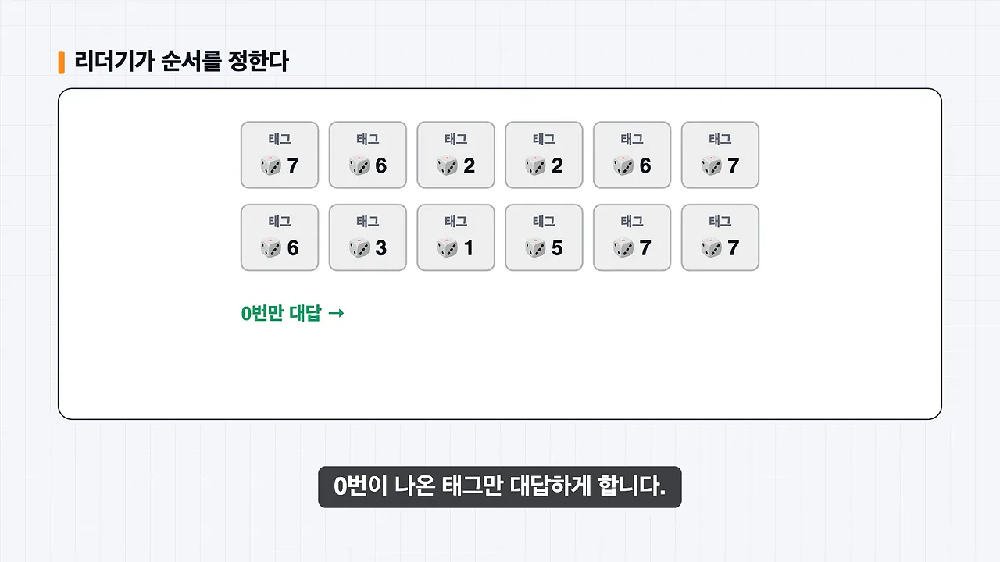
각 태그에는 EPC(Electronic Product Code)라는 고유 번호가 있어서 물건 하나하나를 구분해요. 현업 실수는 물과 금속이에요. UHF 전파는 물에 잘 흡수되고 금속에서 반사돼서, 음료수 박스나 금속 공구엔 전용 태그를 써야 해요. 태그 방향도 중요해요. 아래 그림 오른쪽 빨간 막대처럼 태그 안테나가 리더기 전파와 직각으로 놓이면 거의 안 읽혀요.
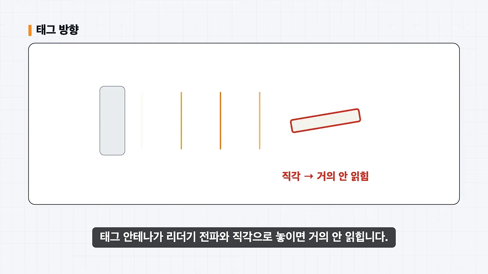
반대로 너무 잘 읽혀서 문제가 되기도 해요. 계산대 옆 매대의 옷까지 같이 읽히는 거예요. 그래서 계산대는 금속 상자 안에서 읽도록 만들어요. RFID는 옷 가게, 물류 창고, 도서관, 공장 부품 추적에 써요.
위치를 재는 UWB
RFID는 물건이 '있다'는 건 알지만 '어디에' 있는지는 몰라요. 분실물 태그가 방바닥 어디에 있는지 화살표로 알려 주는 건 UWB(Ultra-Wideband)가 전파가 날아간 시간을 재기 때문이에요.
UWB는 초광대역이라는 뜻이에요. 아래 화면 왼쪽 파란 막대가 보통 통신이에요. 좁은 주파수를 오래 써요. 오른쪽 주황 띠가 UWB로, 500MHz나 되는 넓은 폭을 약 2나노초 펄스로 아주 짧게 써요.
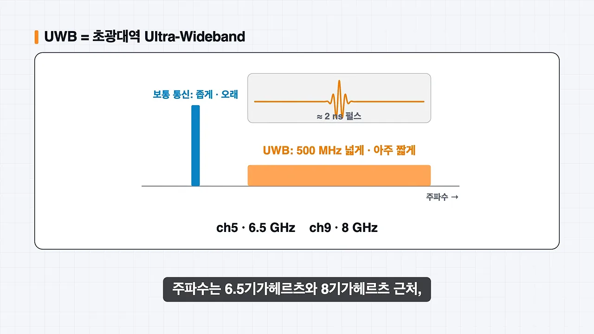
펄스가 짧아야 하는 이유는 거리 계산 때문이에요. 전파는 1나노초에 30cm를 가요. 펄스가 짧고 날카로울수록 도착 순간을 정확히 잡아서 거리를 10cm 안팎으로 잴 수 있어요.
거리 재는 방법은 아래 그림과 같아요. 휴대폰이 신호를 보내면(파란 화살표) 태그가 받고, 주황 막대만큼 머뭇거린 뒤 대답해요(주황 화살표).
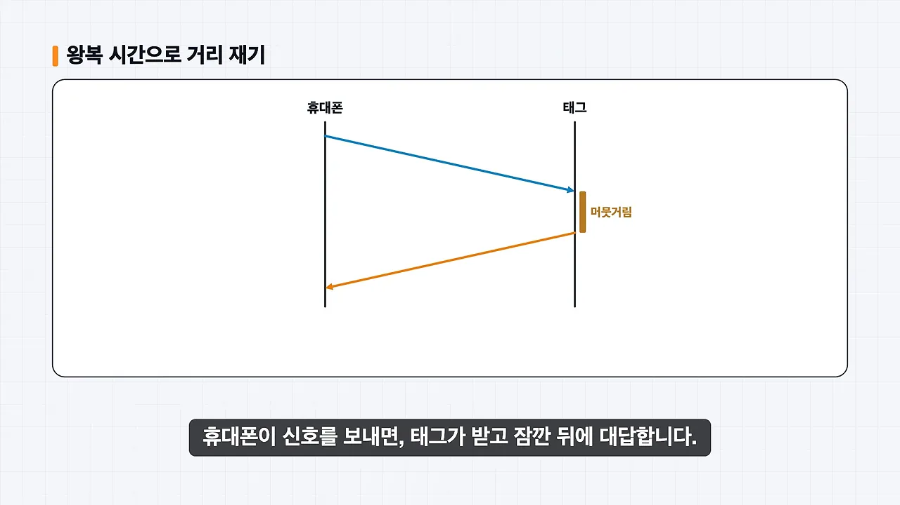
여기에 안테나 여러 개로 신호가 들어온 각도까지 재면 거리와 방향이 나와서 화살표를 그릴 수 있어요.
디지털 차 키에 UWB가 들어간 이유
예전 스마트키는 신호 세기로 가까운지만 봤어요. 그래서 아래 그림처럼 중계기 두 대로 집 안 30m 떨어진 키의 신호를 차 앞까지 이어 붙여, 키가 가까이 있는 척 속이는 공격이 있었어요.
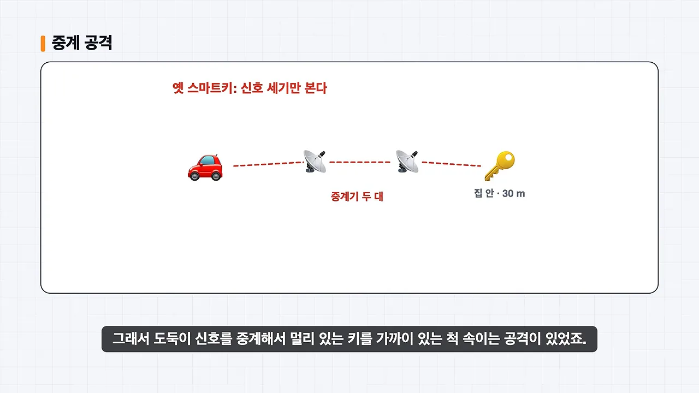
그래서 요즘 디지털 차 키는 세 통신이 한 팀으로 일해요. 화면 위 태그 세 개가 그 역할이에요.
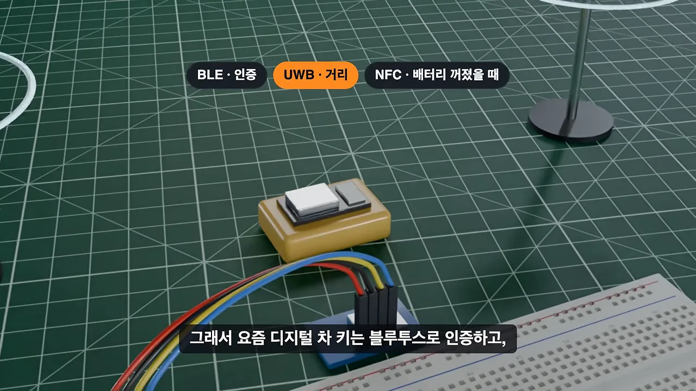
현업에서 어려운 점은 사람 몸과 벽이에요. 몸에 가려 직선 신호가 막히면 벽에 반사된 신호가 먼저 잡혀서 거리가 길게 나와요. 아래 그림 아래쪽 숫자 줄에서 1.24, 1.26, 1.23 사이에 끼어 빨간 줄이 그어진 2.10과 1.95가 그런 값이에요.
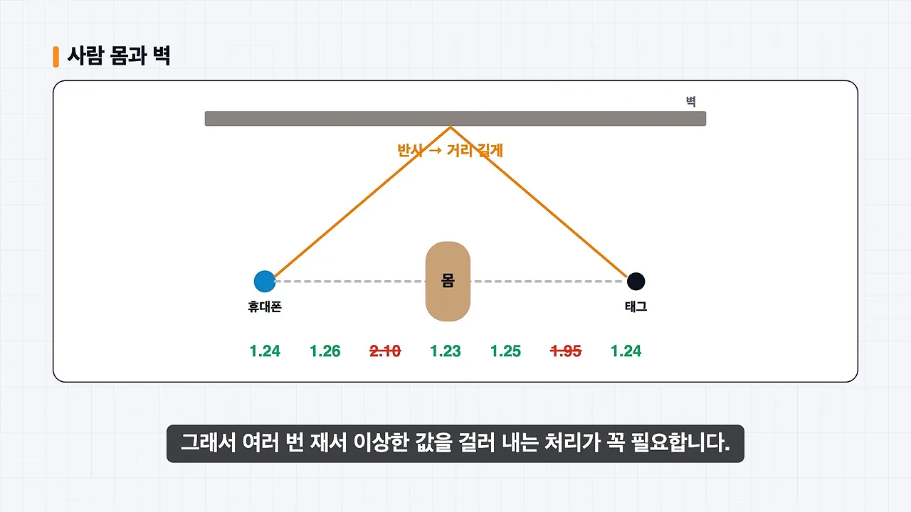
또 안테나 위치와 케이블 길이에 따라 생기는 지연을 공장에서 하나하나 보정해야 정확도가 나와요. UWB는 분실물 태그, 디지털 차 키, 공장 안 작업자와 지게차 위치 추적에 써요.
몸 주변: 블루투스 클래식과 BLE
블루투스 클래식: 1초에 1,600번 뛰어요
블루투스 이어폰은 와이파이와 같은 주파수를 쓰는데도 잘 안 끊겨요. 1초에 1,600번 주파수를 바꿔 뛰기 때문이에요. 블루투스는 1990년대 에릭슨이 무선 헤드셋을 위해 시작했고, 이름은 덴마크와 노르웨이를 하나로 묶은 옛 왕의 별명에서 따왔어요. 여러 기기를 하나로 잇는다는 뜻이에요.
아래 화면처럼 2,402~2,480MHz를 1MHz 폭 채널 79개로 촘촘히 나눠요. 그리고 정해진 순서대로 채널을 바꿔 가며 말해요. 이게 주파수 도약이에요.
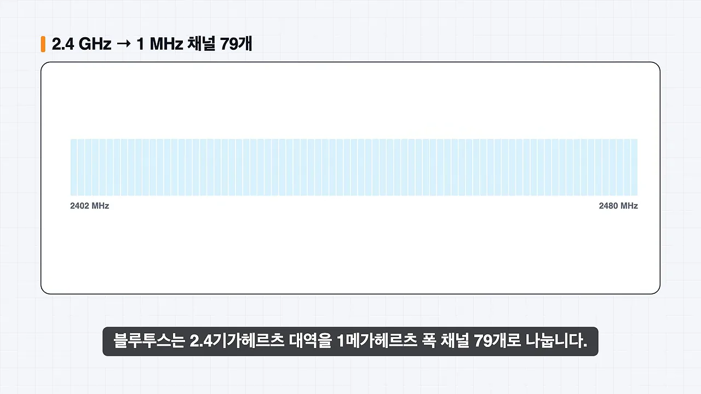
요즘은 잡음이 심한 채널을 아예 건너뛰는 기능도 써요. 연결 구조는 피코넷이라고 불러요. 중심 기기 하나에 주변 기기가 최대 7대까지 동시에 붙어요. 휴대폰 하나에 이어폰, 시계, 자동차가 함께 붙는 식이에요. 속도는 기본 1Mbps, 향상된 모드에서 2~3Mbps예요.
음악은 그대로 보내기엔 너무 커서 압축해 보내요. 기본 코덱 SBC(Low Complexity Subband Coding), 아이폰이 주로 쓰는 AAC(Advanced Audio Coding), 고음질용 LDAC가 있어요. 처음 연결할 땐 페어링으로 서로 암호 키를 만들어 저장해 두고, 다음부터는 자동으로 붙어요.
현업에서 자주 만나는 문제는 와이파이 간섭이에요. 같은 2.4GHz를 쓰니까, 아래 그림처럼 한 칩에서 와이파이(주황)와 블루투스(파랑)가 동시에 나가면 부딪혀요.
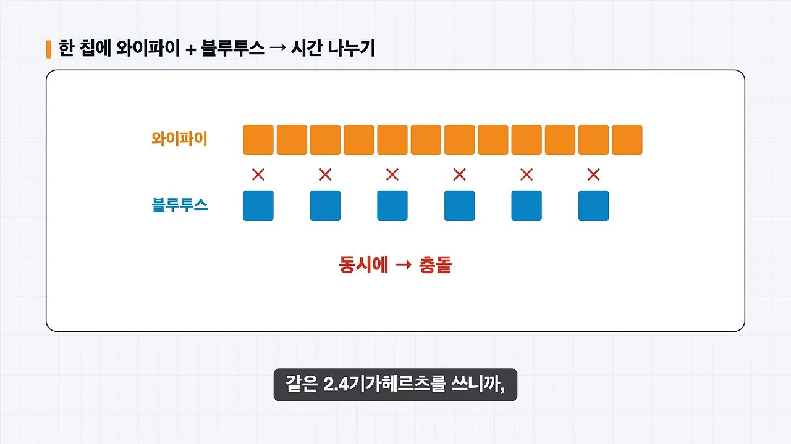
또 하나는 지연이에요. 아래 그림처럼 소리는 압축, 버퍼, 전송, 풀기 네 단계를 거쳐요. 그동안 파란 소리 선이 검은 영상 선보다 늦게 끝나요.
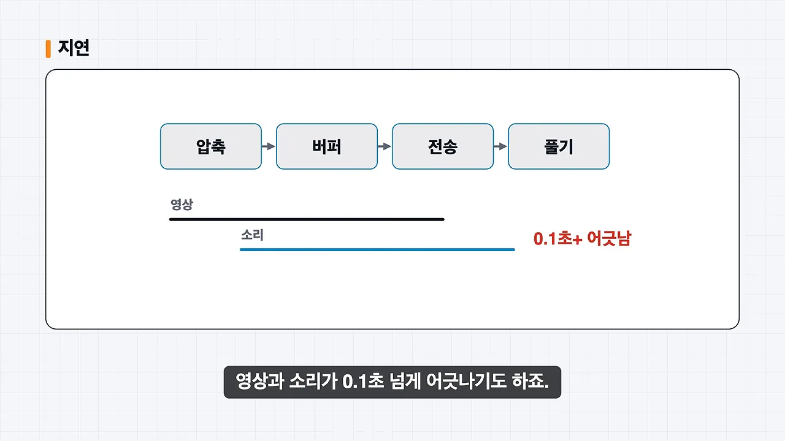
블루투스 클래식은 무선 이어폰, 스피커, 차량 핸즈프리처럼 소리를 계속 보내는 곳에 써요.
BLE: 대부분 자고 잠깐 깨서 말해요
계속 연결해 두는 방식은 배터리를 꽤 써요. 그래서 따로 만든 게 BLE(Bluetooth Low Energy)예요. 이름만 블루투스지 사실상 새로 설계한 통신이에요. 같은 2.4GHz지만 아래 화면처럼 2MHz 폭 채널 40개로 나눠요.
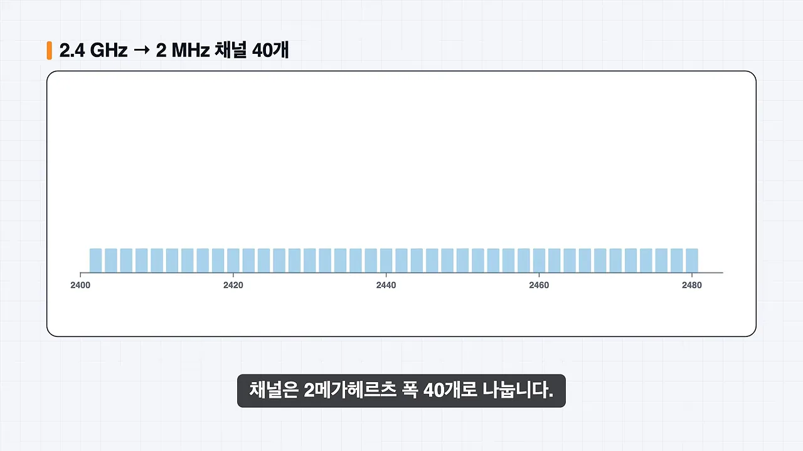
기기는 광고 채널에 '나 여기 있어요' 하고 광고 패킷을 뿌려요. 비콘은 이 광고만 계속하는 기기예요. 휴대폰이 광고를 듣고 연결을 요청하면 나머지 37개 채널로 옮겨서 대화해요.
핵심은 연결 간격이에요. 아래 화면의 뾰족한 세로선이 깨어나서 몇 ms 말하는 순간이고, 나머지 평평한 구간이 자는 시간이에요.
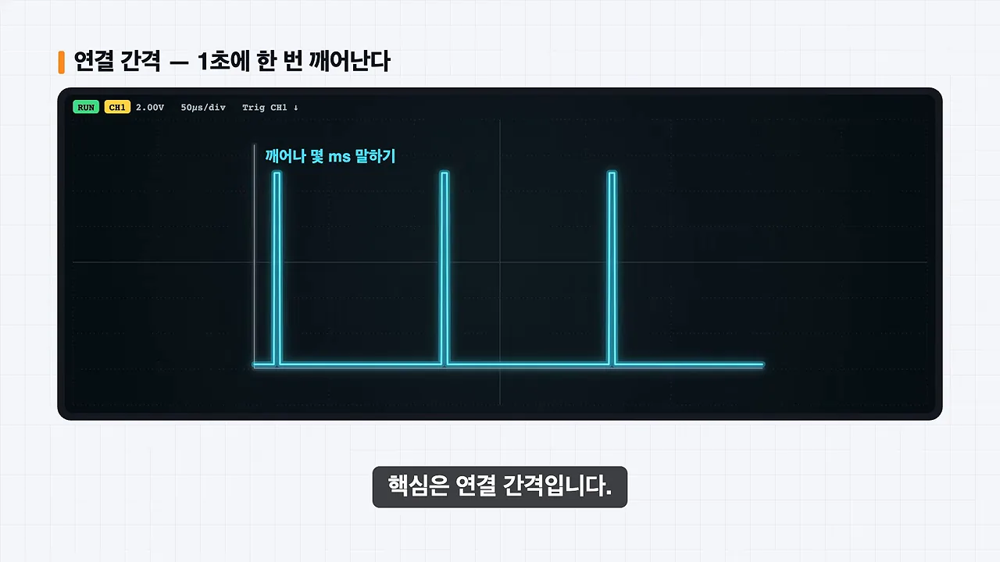
데이터는 GATT(Generic Attribute Profile)라는 표로 정리해요. 아래 화면 왼쪽 위 상자처럼 '심박수 서비스'라는 폴더 안에 '심박수 측정값 = 72', '센서 위치 = 손목' 같은 칸(특성)이 있어요. 휴대폰은 칸을 읽거나, 값이 바뀌면 알려 달라고 구독해요.
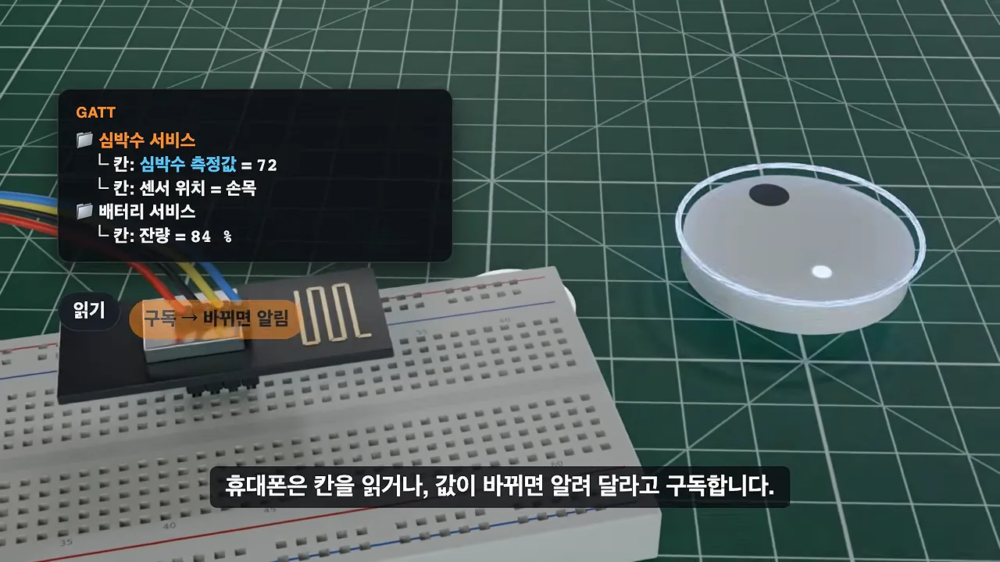
속도는 1Mbps가 기본이에요. 블루투스 5부터 2Mbps 모드와, 멀리 가는 대신 느린 125kbps·500kbps 모드가 생겼어요. 블루투스 6.0부터는 채널 사운딩으로 BLE끼리 거리를 수십 cm 수준으로 잴 수 있고, 영상 기준 최신 규격은 2026년 11월에 나온 7.0이에요. 무선 이어폰도 LE(Low Energy) 오디오라는 새 방식으로 BLE 쪽으로 넘어오고 있어요. 한 기기가 여러 사람에게 소리를 뿌리는 오라캐스트도 돼요.
현업에서 정말 많이 겪는 문제는 연결 간격 설정이에요. 아래 그림 위쪽 주황 줄처럼 간격을 짧게 하면 반응은 빠르지만 배터리가 빨리 닳아요. 아래 파란 줄처럼 길게 하면 오래 가지만 버튼을 눌러도 늦게 반응해요.
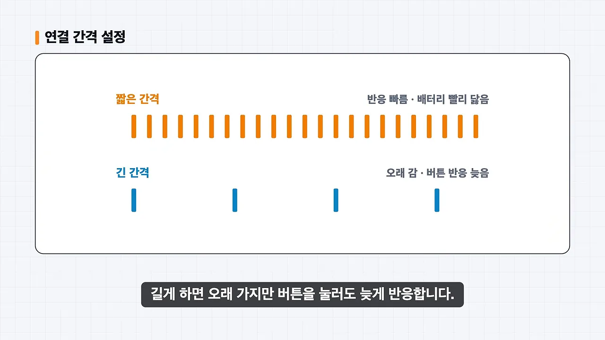
또 한 번에 보낼 수 있는 데이터 크기가 정해져 있어서, 큰 데이터는 잘게 쪼개고 다시 합쳐야 해요. BLE는 스마트워치, 무선 마우스, 체온계, 혈당 센서, 분실물 태그에 써요. 코인 전지로 몇 달에서 몇 년을 가요.
집 안의 그물: 지그비, 스레드와 매터
지그비: 전구가 옆 전구에게 말을 전해요
BLE는 기본적으로 휴대폰과 기기가 일대일로 이야기해요. 집 안의 전구 50개, 센서 30개를 한꺼번에 묶으려면 서로 말을 전달하는 그물이 필요해요. 그게 지그비예요. 화면 위 태그에 요약이 있어요. IEEE(Institute of Electrical and Electronics Engineers) 802.15.4 무선 규격 위에서 돌고, 2.4GHz, 채널 16개, 250kbps예요.
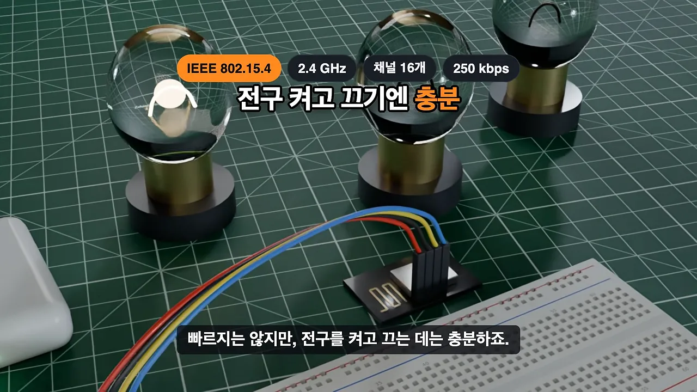
지그비 네트워크엔 세 종류의 기기가 있어요. 네트워크를 만들고 관리하는 코디네이터 하나, 말을 전달하는 라우터, 말만 하고 금방 잠드는 엔드 디바이스예요. 전기를 늘 받는 전구나 콘센트는 라우터가, 배터리로 도는 문 센서나 버튼은 엔드 디바이스가 돼요. 라우터끼리 그물처럼 엮인 걸 메시 네트워크라고 해요. 거실 버튼 신호가 전구에서 전구로 건너가 안방 끝 전구까지 가고, 중간 전구 하나가 꺼져도 다른 길로 돌아가요. 이름은 꿀벌이 춤으로 꽃 위치를 동료에게 전하는 모습에서 따왔어요.
현업에서 흔한 문제는 와이파이 채널과 겹치는 거예요. 아래 그림의 주황 언덕 세 개가 와이파이 1, 6, 11번 채널이고, 초록 막대가 지그비 채널이에요. 진하게 칠한 15, 20, 25번은 와이파이 언덕 사이 틈에 있어요.
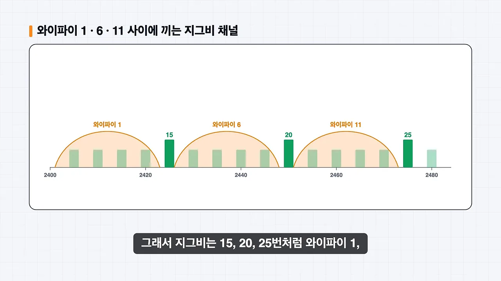
라우터 역할을 하는 전구를 벽 스위치로 꺼 버리면, 그 전구를 거치던 기기들이 한동안 길을 잃어요. 그래서 스마트 전구를 쓰면 벽 스위치는 켜 둔 채로 두라고 안내해요. 또 회사마다 지그비 위에 얹은 기능이 조금씩 달라, 다른 브랜드 허브에 붙였을 때 일부 기능이 안 되는 경우가 많았어요. 이 호환성 문제가 다음 통신이 생긴 이유이기도 해요.
아래 화면 오른쪽 카드는 지그비 한 장 요약이에요. 거리는 홉당 10~수십 m, 전력은 센서가 코인 전지, 연결은 메시예요.
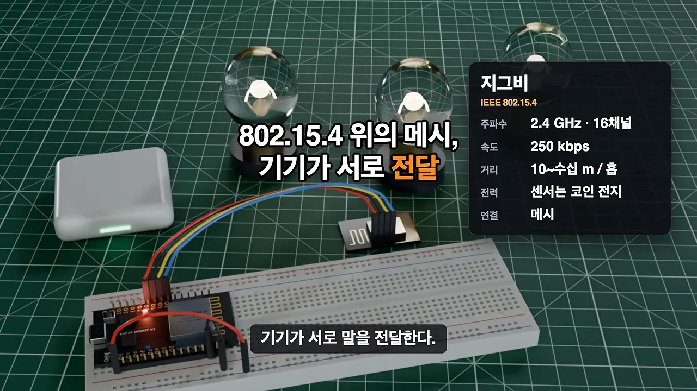
스레드: 기기마다 인터넷 주소를 줘요
지그비 기기는 인터넷 주소가 없어서 꼭 전용 허브를 거쳐야 해요. 스레드는 지그비와 같은 802.15.4 무선(2.4GHz, 250kbps, 메시)을 쓰면서, 모든 기기에 IPv6 주소를 줘요. 문제는 크기예요. 아래 그림처럼 IPv6 머리말만 40바이트인데, 802.15.4 패킷은 최대 127바이트예요.
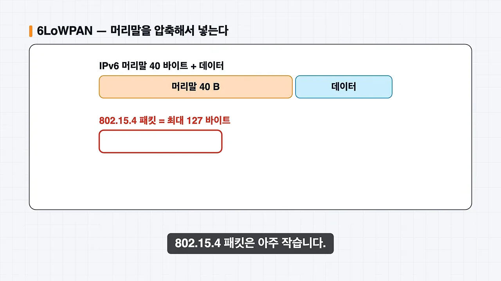
집 안의 스레드 그물과 와이파이 인터넷 사이는 보더 라우터가 이어 줘요. 요즘은 스마트 스피커나 셋톱박스가 이 역할을 해요. 보더 라우터가 여러 대면 하나가 꺼져도 다른 하나가 이어받아서, 허브 하나에 모든 게 걸려 있던 문제를 줄였어요.
매터: 그 위의 공용어
스레드가 도로라면 매터는 그 위에서 쓰는 공용어예요. '전구 켜', '밝기 50%' 같은 명령 형식을 모든 회사가 똑같이 정했어요. 그래서 매터 전구는 애플, 구글, 삼성, 아마존 앱 어디서나 써요. 아래 그림처럼 매터는 스레드(배터리 센서)뿐 아니라 와이파이(전기 많이 쓰는 기기)와 이더넷(유선) 위에서도 돌아요.
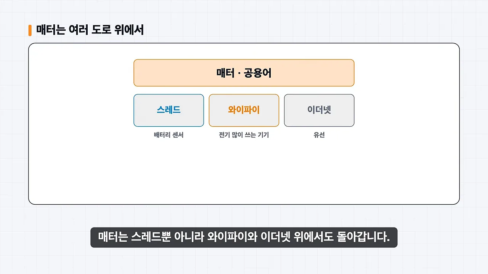
처음 연결하는 순서는 아래 세 칸이에요. 상자의 QR(Quick Response) 코드를 찍고, 블루투스로 네트워크 정보를 넘긴 뒤, 스레드나 와이파이로 넘어가요. 아래 초록 띠는 새로 추가된 방법이에요.
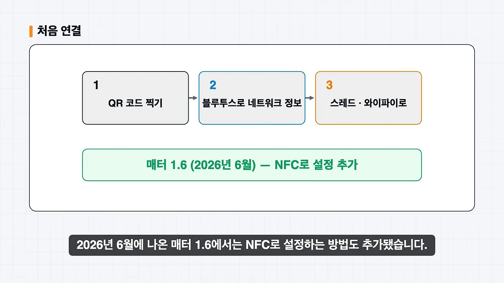
현업에서 어려운 점은 인증과 보안이에요. 기기마다 공장에서 인증서를 넣어야 하고, 매터 인증을 받아야 로고를 붙일 수 있어요. 그리고 MCU(Microcontroller Unit)가 IPv6, 암호화, 메시 라우팅을 다 돌려야 해서 플래시와 RAM(Random Access Memory)이 지그비보다 훨씬 많이 필요해요. 스레드와 매터는 스마트 도어락, 전구, 센서, 블라인드처럼 요즘 스마트홈 기기 전반에 써요.
가장 빠른 와이파이
영상을 보고 파일을 받으려면 훨씬 빨라야 해요. 와이파이가 블루투스보다 수천 배 빠른 건 넓은 도로를 쓰고, 그 도로를 아주 많은 차선으로 나누기 때문이에요. 와이파이는 2.4, 5, 6GHz 대역을 써요. 채널 폭은 블루투스가 1~2MHz인 데 비해 20MHz에서 시작하고, 와이파이 7은 320MHz까지 써요.
넓은 폭은 아래 화면의 노란 막대처럼 수십~수천 개의 작은 주파수로 쪼개서 동시에 데이터를 실어요. 이게 OFDM(Orthogonal Frequency-Division Multiplexing)이에요. 한 차선이 막혀도 나머지 차선으로 계속 달릴 수 있어요.
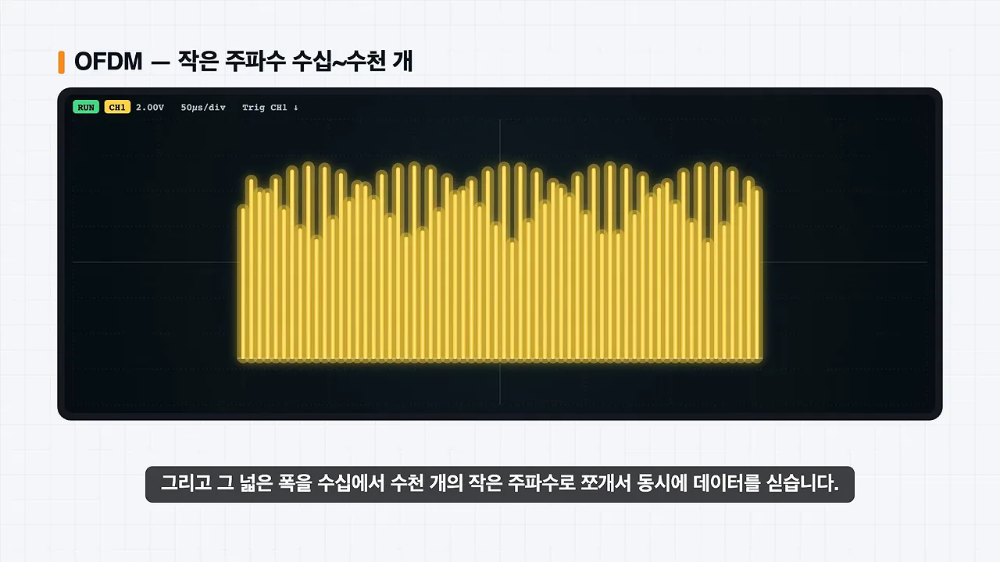
세대마다 이름이 붙었어요. 아래 표의 맨 아래 주황 줄이 지금 인증된 최신 와이파이 7이에요.
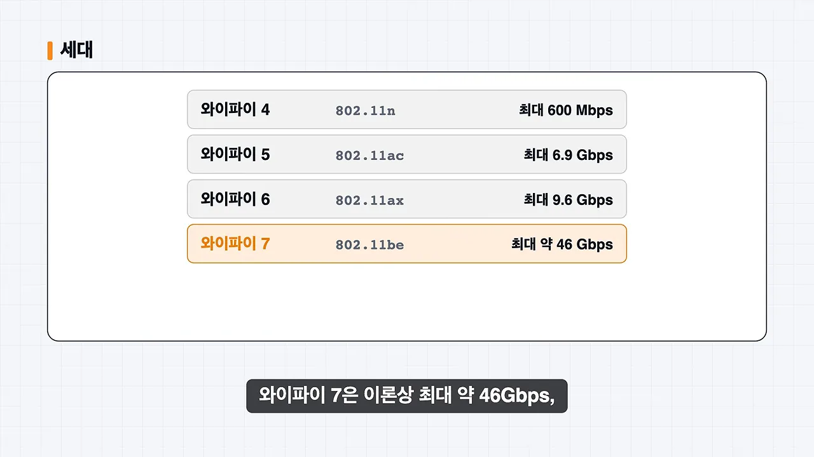
그런데 MCU에서 쓰는 와이파이는 훨씬 소박해요. 화면 오른쪽 위 꼬리표가 대표 칩 ESP32의 사양이에요.
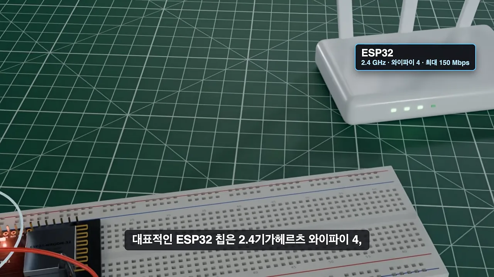
연결 구조는 공유기를 중심으로 모이는 스타형이에요. 공유기가 일정한 간격으로 비콘을 뿌리면, 기기는 그걸 보고 이름과 암호로 접속해요. 2.4GHz에서는 채널이 서로 겹쳐서, 안 겹치는 1, 6, 11번을 주로 써요.
현업 최대 문제는 전력
아래 화면의 노란 사각 펄스가 전파를 쏘는 순간의 전류예요. 쏠 때마다 200mA 넘게 흘러요.
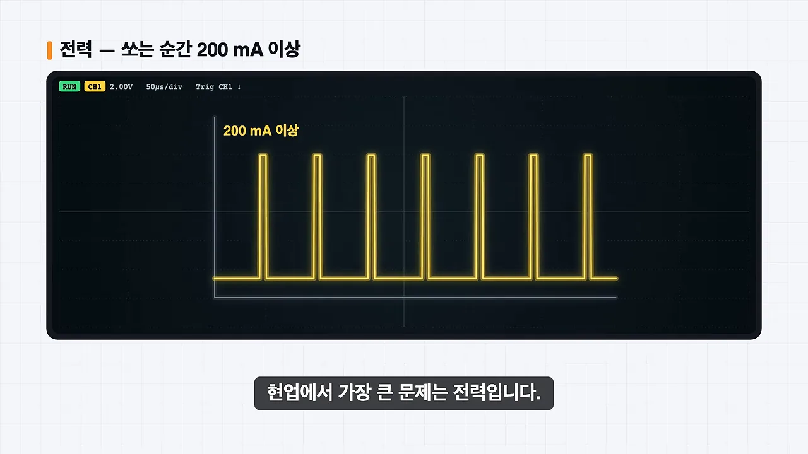
전송 순간 전류가 확 튀니까 전원 회로가 버티지 못하면 칩이 리셋되기도 해요. 아래 화면 아래쪽 노란 선이 전류가 튀는 순간이고, 위쪽 파란 3.3V 선이 그 순간 빨간 점선(리셋 전압) 아래로 꺼져요.
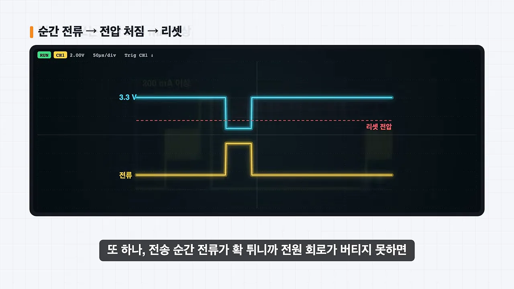
회사나 학교처럼 로그인 화면이 뜨는 와이파이엔 화면 없는 IoT 기기가 접속하지 못하는 것도 흔한 함정이에요. 와이파이는 스마트 TV(Television), 노트북, 가전, 보안 카메라처럼 전원이 넉넉하고 데이터가 많은 곳에 써요. 멀리 가야 하는 IoT용으로 900MHz를 쓰는 와이파이 헤일로도 있어요.
먼 거리: 서브 GHz와 LoRa
서브 GHz: 낮은 주파수로 단순하게
차 키 버튼이 주차장 저 끝에서도 문을 여는 건 1GHz보다 낮은 주파수를 쓰기 때문이에요. 이 대역을 통틀어 서브 GHz라고 해요. 차 키 주파수는 나라마다 달라요.
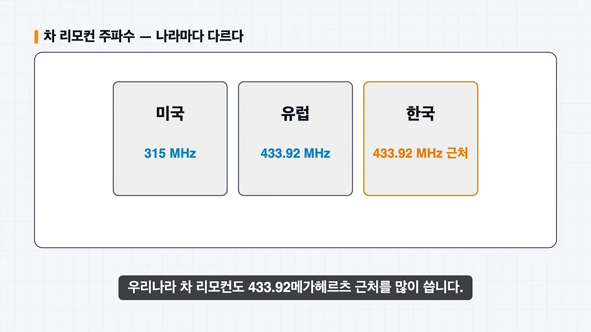
주파수가 낮으면 파장이 길어서 벽과 차체를 잘 돌아 나가고, 같은 전력으로 더 멀리 가요. 그래서 작은 코인 전지로도 수십 m를 보내요. 변조도 아주 단순해요. 전파를 켰다 껐다 하거나, 주파수 두 개로 0과 1을 나타내요. 수신 칩도 단순하고 싸서 무선 초인종, 차고 문, 커튼 리모컨에도 많이 들어가요.
단순한 만큼 위험도 있어요. 누군가 버튼 신호를 녹음했다가 다시 틀면 문이 열릴 수 있어요. 그래서 차 키는 누를 때마다 코드가 바뀌는 롤링 코드를 써요. 아래 화면에서 누를 때마다 8F3A 21C7, 1B9E 77D0처럼 코드가 달라져요.
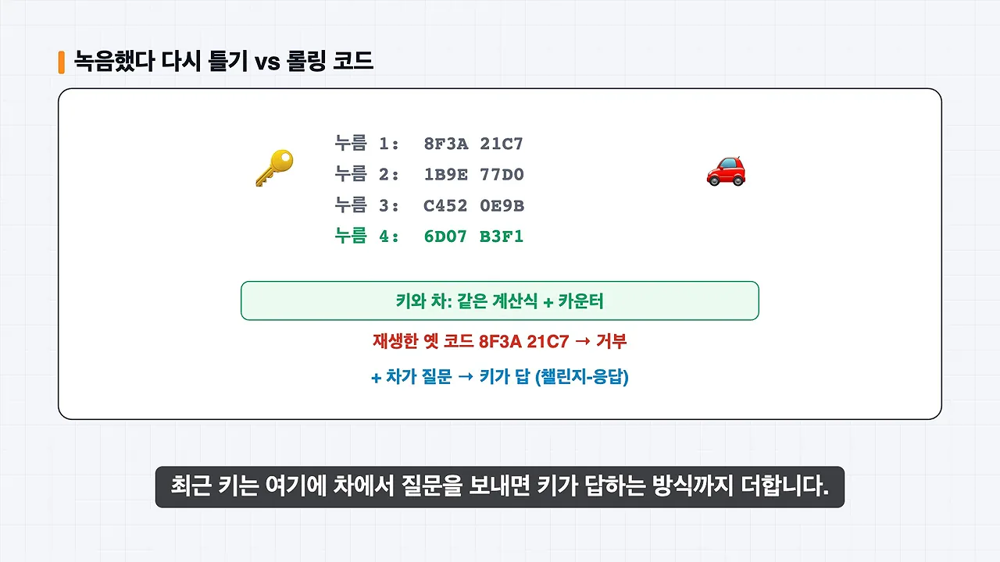
최근 키는 여기에 차가 질문을 보내면 키가 답하는 방식까지 더해요. 현업에서 흔한 실수는 안테나예요. 작은 리모컨엔 제대로 된 안테나를 넣기 어려워서 기판 위 짧은 구리 선이 안테나 역할을 해요. 손에 쥐는 위치에 따라 거리가 확 달라져요. 또 서브 GHz는 나라마다 쓸 수 있는 주파수와 출력이 달라서, 수출할 때마다 주파수를 바꿔 다시 인증을 받아야 해요. 전파를 쏠 수 있는 시간 비율인 듀티 사이클을 제한하는 나라도 있어요. 서브 GHz는 차 키, 무선 초인종, 무선 화재 감지기, 원격 검침에 써요.
LoRa: 아주 천천히, 독특한 모양으로
수십 m가 아니라 수십 km를 가야 한다면, 같은 서브 GHz 대역에서 전혀 다른 방법을 쓰는 LoRa가 있어요. 롱 레인지, 멀리 가는 통신이라는 뜻이에요. 우리나라에서는 920.9~923.3MHz 대역을 써요.
핵심은 처프라는 신호예요. 주파수를 낮은 곳에서 높은 곳으로 미끄러지듯 쓸어 올리는 소리로, 새가 짹 하고 우는 소리와 비슷해요. 데이터는 처프가 어디서 시작하는지로 나타내요. 받는 쪽은 들어온 처프에 반대 방향 처프를 곱해서, 흩어진 에너지를 아래 화면처럼 한 점으로 모아요.
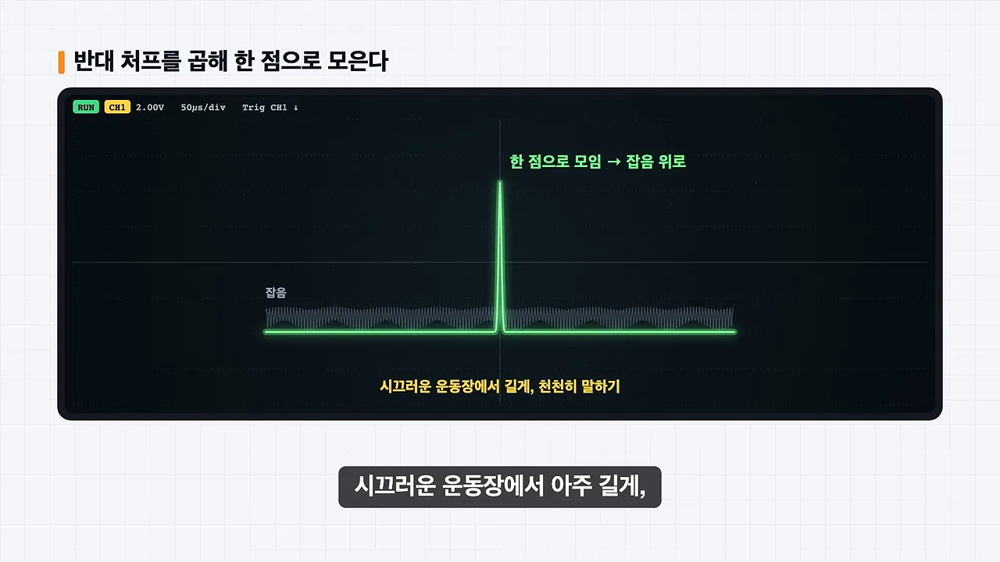
얼마나 길게 말할지를 확산 인자(SF(Spreading Factor))로 정해요. 아래 막대에서 SF7(Spreading Factor 7)부터 SF12(Spreading Factor 12)까지, 하나 올릴 때마다 막대(말하는 시간)가 두 배로 길어져요.
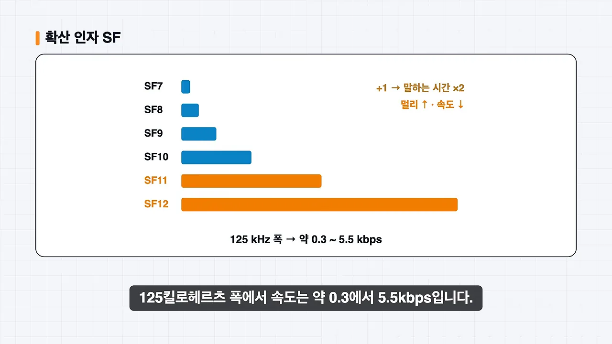
거리는 도심에서 2~5km, 탁 트인 곳에서는 15km 넘게 가요. LoRa 위에 네트워크 규칙을 올린 게 LoRaWAN이에요. 아래 그림처럼 센서는 근처 게이트웨이 아무 데나 한 번 외치면 되고, 게이트웨이가 인터넷 너머 서버로 전달해요.
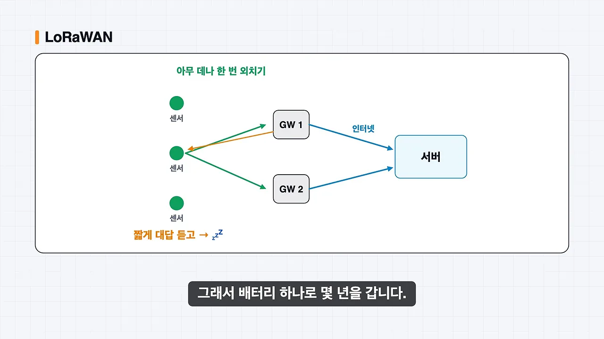
우리나라에서는 2016년에 SK텔레콤이 LoRa 전국망을 깔았어요. 현업에서 꼭 알아야 할 건 전파를 쏘는 시간, 에어 타임이에요. SF12로 몇십 바이트를 보내면 1초가 넘게 걸리기도 해요. 그동안 전류가 흐르니까 SF를 높게 잡으면 배터리가 금방 닳아요.
나라마다 한 번에 쏠 수 있는 시간과 방식도 정해져 있어요. 아래 화면처럼 우리나라에서는 채널이 비었는지 먼저 듣고, 누가 쓰고 있으면 기다렸다가 보내야 해요.
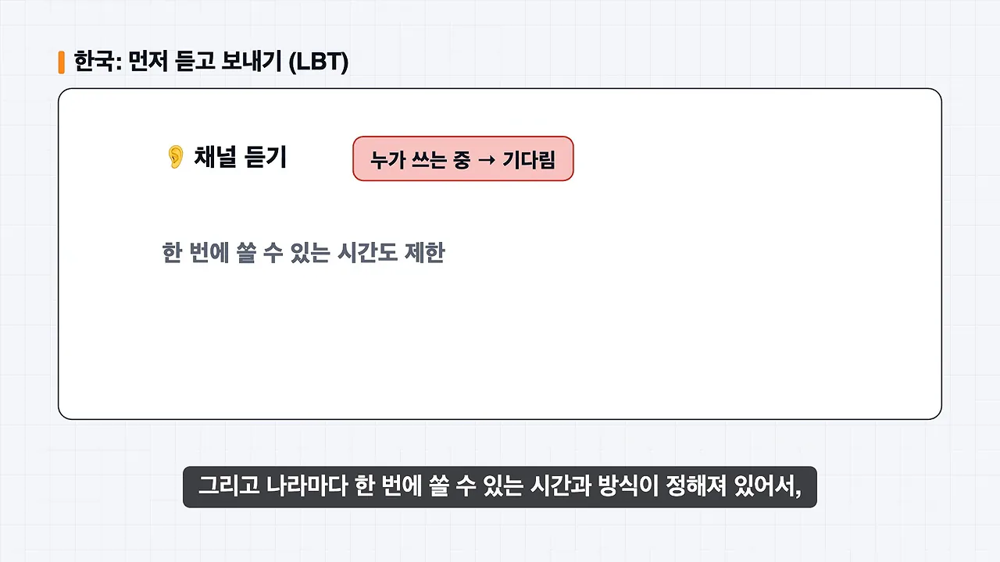
또 LoRa는 한 번에 수십에서 많아야 2백여 바이트를 보내는 통신이에요. 사진이나 큰 펌웨어를 보내기엔 맞지 않아요. 아래 카드가 LoRa 한 장 요약이에요.
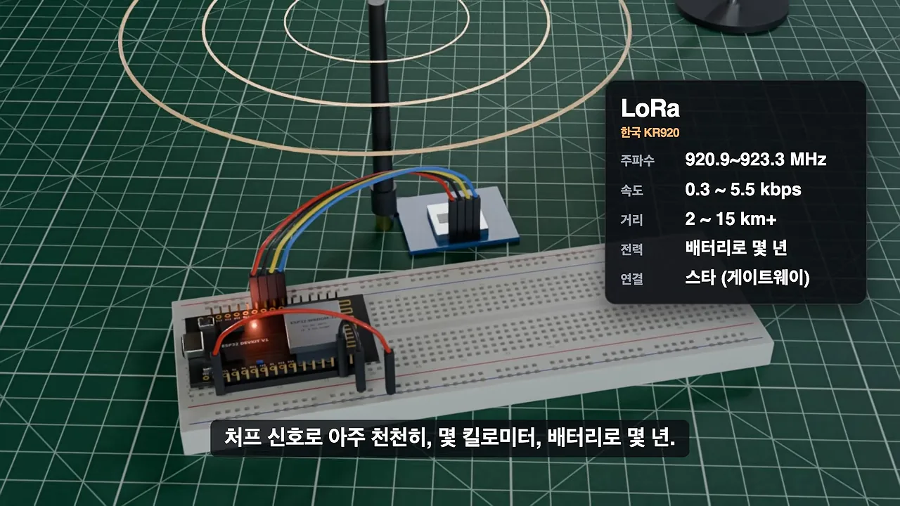
망을 빌리는 NB-IoT·LTE-M, 그리고 위성
NB-IoT: 휴대폰 망의 아주 좁은 틈
LoRa는 게이트웨이를 직접 깔아야 할 때가 많아요. 이미 전국에 깔린 휴대폰 기지국을 그대로 쓰는 게 NB-IoT(협대역 사물인터넷)예요. 지하 2층 수도 계량기가 휴대폰도 안 터지는 곳에서 데이터를 보내는 비결은 같은 말을 수십 번 반복하는 거예요.
아래 그림의 회색 띠가 LTE(Long-Term Evolution) 20MHz이고, 가운데 주황 선 한 칸이 NB-IoT가 쓰는 180kHz예요. 좁게 쓰면 잡음도 적게 들어와서 약한 신호도 잡을 수 있어요.
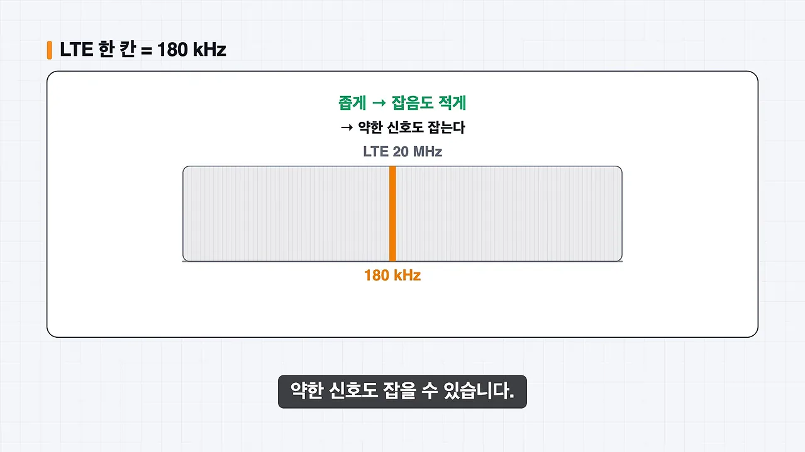
대신 속도는 아주 느려요. 처음 규격 기준으로 내려받기 약 26kbps, 올리기 약 66kbps예요. 배터리 비결은 두 가지 잠이에요. 아래 그림 위 파란 줄이 PSM(Power Saving Mode)이에요. 기지국에 '나 잘게' 하고 등록만 해 둔 채 몇 시간, 며칠씩 완전히 잠들어요. 아래 주황 줄이 eDRX예요. 아주 긴 간격으로만 잠깐 깨서 나한테 온 메시지가 있는지 확인해요.
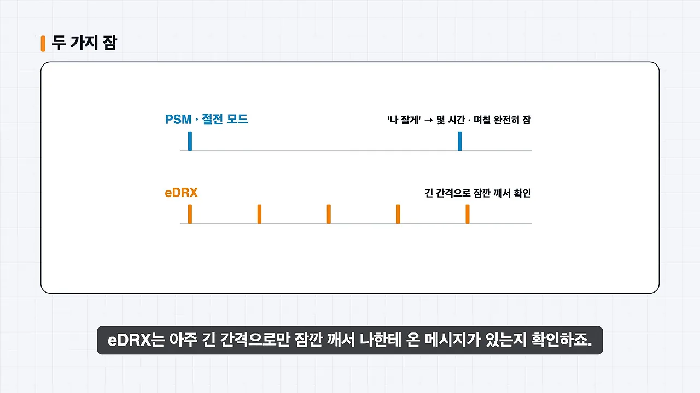
형제 통신으로 LTE-M이 있어요. 아래 표처럼 폭(1.4MHz)과 속도(약 1Mbps)가 더 크고, 움직이면서 기지국을 갈아탈 수 있고 음성 통화도 돼요.
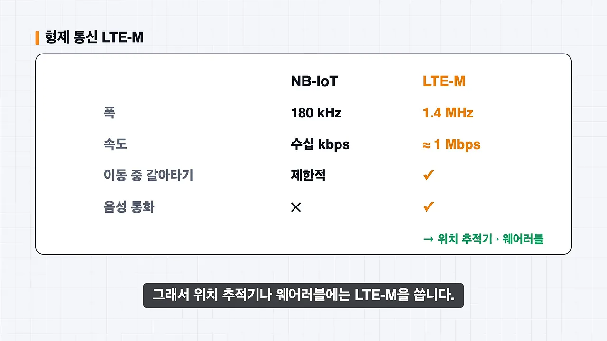
우리나라에서도 2017년, 2018년부터 통신사들이 NB-IoT와 LTE-M 서비스를 시작했어요. LoRa와 가장 큰 차이는 망이에요. 아래 그림 왼쪽 LoRa는 게이트웨이를 내가 깔아서 요금이 없지만 관리도 내가 해요. 오른쪽 NB-IoT는 통신사 망이라 유심과 요금제가 필요해요.
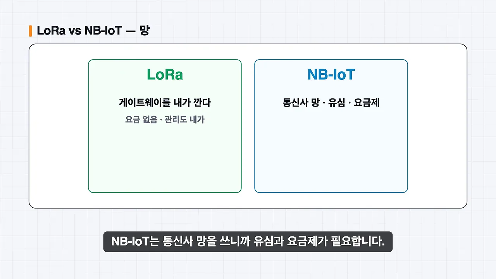
현업에서 겪는 문제는 첫 접속이에요. 신호가 약한 곳에서는 기지국을 찾는 데만 수십 초가 걸리고, 그동안 전류가 계속 흘러 배터리 계산이 틀어져요. 또 PSM 설정이 통신사 망에서 실제로 허용되는 값인지 꼭 확인해야 해요. 모듈은 잤다고 생각하는데, 망이 허락하지 않아 계속 깨어 있는 경우가 있어요. NB-IoT는 수도·가스 원격 검침, 스마트 주차, 화재 감지기에, LTE-M은 위치 추적기, 공유 킥보드, 웨어러블에 써요.
위성 IoT: 머리 위 위성이 기지국
바다 한가운데, 사막, 깊은 산속처럼 기지국이 아예 없는 곳에선 머리 위 수백 km를 지나가는 위성이 기지국 역할을 해요. 예전 위성 통신은 커다란 안테나와 전용 단말기가 필요했지만, 지상 수백~천여 km를 도는 저궤도 위성이 많아지면서 달라졌어요. 3GPP 릴리스 17부터 NB-IoT, LTE-M, 5G가 위성과 직접 통신하는 방법이 표준에 들어갔어요. 이걸 비지상 네트워크, NTN(Non-Terrestrial Network)이라고 해요.
위성엔 두 가지 어려움이 있어요. 첫째는 거리예요. 기지국은 몇 km지만 위성은 수백 km 위라 신호가 아주 약해지고 왕복 시간도 걸려요. 둘째는 속도예요. 저궤도 위성은 초속 7km 넘게 날아가서, 구급차 사이렌 소리가 지나가며 변하듯 주파수가 계속 밀려요(도플러 효과). 아래 그림 아래쪽 주황 곡선이 그렇게 밀리는 주파수예요.
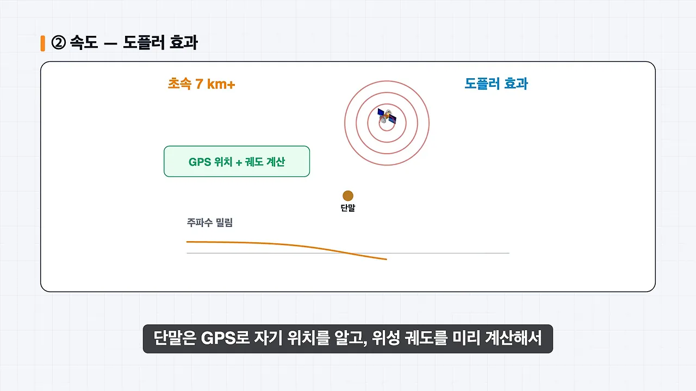
위성 하나가 하늘에 보이는 시간은 몇 분뿐이라 메시지를 모아 뒀다가 위성이 지나갈 때 보내는 방식도 써요. 실제 서비스도 이미 나와 있어요.
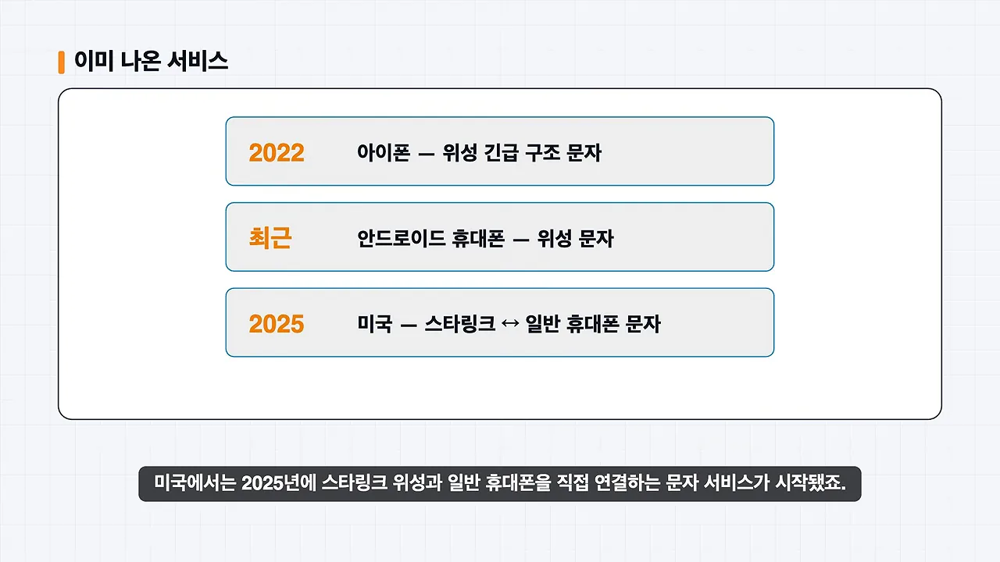
현업에서 주의할 점은 안테나 방향과 시야예요. 하늘이 트여 있어야 하고 건물 안에서는 거의 안 돼요. 한 번 보낼 수 있는 데이터가 작고 요금도 비싸서, 정말 필요한 정보만 골라 압축해 보내야 해요. 위성 IoT는 바다 위 컨테이너, 원격 농장, 송유관, 산악 조난 구조에 써요.
한 장 비교와 고르는 질문 세 개
4cm에서 시작해 우주까지 왔어요. 영상은 열두 가지를 거리, 속도, 배터리, 연결 모양 네 가지로 한 장씩 비교해요.
먼저 거리예요. 아래 로그 눈금 축에서 왼쪽 끝 NFC(몇 cm)부터 RFID(수 m), 블루투스·BLE·지그비·스레드·UWB·와이파이(수십 m), 서브 GHz, LoRa와 NB-IoT(수 km), 오른쪽 끝 위성 순서예요.
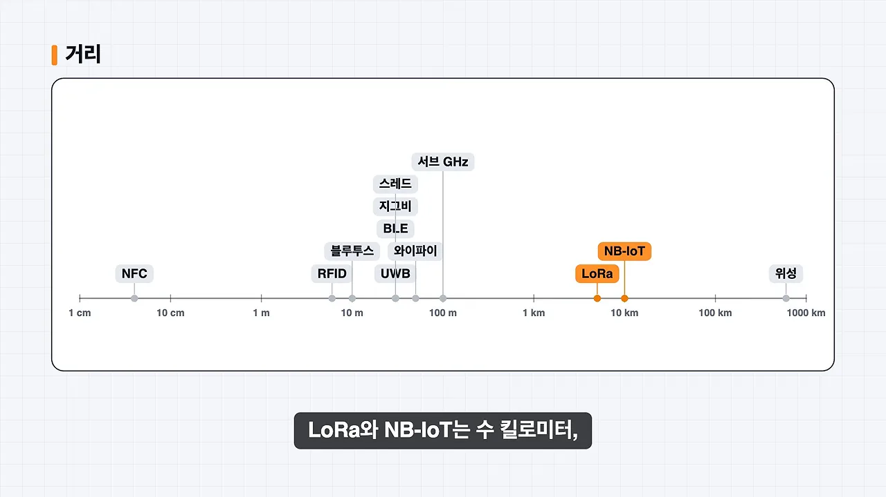
다음은 속도예요. 아래 로그 눈금 막대에서 맨 위 와이파이가 가장 길고, 아래로 갈수록 짧아져요. NB-IoT, 서브 GHz, LoRa, 위성은 막대가 거의 보이지 않아요.
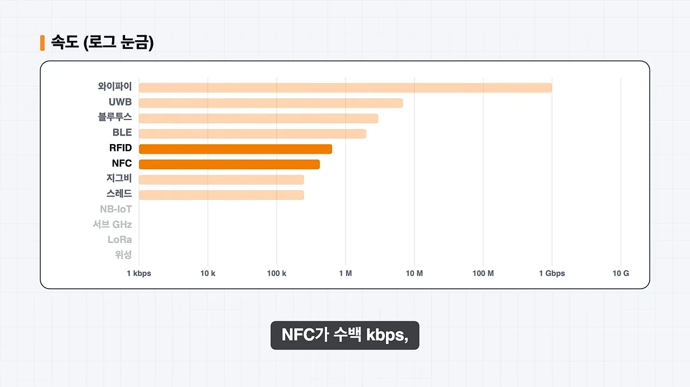
배터리는 거꾸로예요. 아래 그림의 세 상자가 그 묶음이에요.
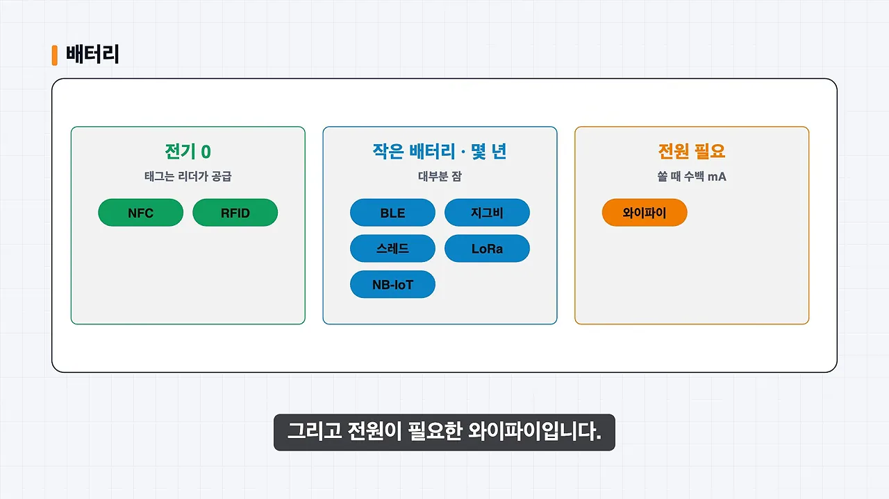
연결 모양으로 묶으면 아래 네 칸이에요. 일대일은 NFC·UWB·블루투스, 스타형은 와이파이·BLE·LoRa, 메시형은 지그비·스레드, 셀룰러는 NB-IoT·LTE-M·위성이에요.
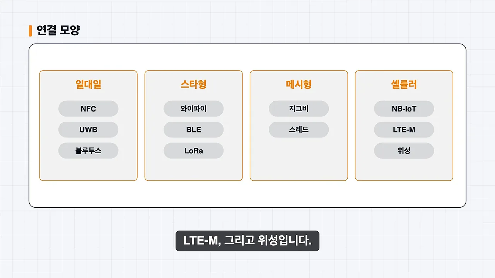
영상 내용을 한 표로 모으면 이래요. 숫자는 모두 영상에서 말한 값이에요.
| 통신 | 주파수 | 거리 | 속도 | 전력 | 연결 |
|---|---|---|---|---|---|
| NFC | 13.56MHz | 4~10cm | 106~424kbps | 카드는 전기 0 | 일대일 |
| UHF RFID | 917~920.8MHz(한국) | 수 m~10m | — | 태그는 전기 0 | 리더–다수 태그 |
| UWB | 6.5·8GHz 근처 | 수십 m, 10cm 정확도 | — | — | 일대일 |
| 블루투스 클래식 | 2.4GHz, 79채널 | 수십 m | 1~3Mbps | 계속 연결이라 꽤 씀 | 피코넷(최대 7대) |
| BLE | 2.4GHz, 40채널 | 수십 m | 125kbps~2Mbps | 코인 전지 몇 달~몇 년 | 스타 |
| 지그비 | 2.4GHz, 16채널 | 수십 m | 250kbps | 센서는 코인 전지 | 메시 |
| 스레드·매터 | 2.4GHz(802.15.4) | 수십 m | 250kbps | 배터리 센서 가능 | 메시 + IPv6 |
| 와이파이 | 2.4·5·6GHz | 집 한 채 | 수백 Mbps~Gbps | 쏠 때 200mA 이상 | 스타 |
| 서브 GHz | 315·433.92MHz 등 | 수십 m 이상 | — | 코인 전지 | — |
| LoRa | 920.9~923.3MHz(한국) | 2~15km+ | 0.3~5.5kbps | 배터리로 몇 년 | 스타(게이트웨이) |
| NB-IoT / LTE-M | LTE 망(180kHz / 1.4MHz) | 수 km | 수십 kbps / 약 1Mbps | 10년 목표 | 셀룰러 |
| 위성 IoT | 3GPP NTN 등 | 지구 전체 | 느림 | — | 셀룰러(위성) |
'—'는 영상이 숫자를 말하지 않은 칸이에요.
고르는 질문 세 개
실제로 설계할 때는 질문 세 개면 된다고 해요. 아래 흐름도의 세 회색 상자가 그 질문이에요.
- 배터리로 돌아가나요? 전원이 넉넉하고 데이터가 많으면 와이파이예요. 배터리라면 다음 질문으로 가요.
- 얼마나 멀리 가야 하나요? 손이 닿는 거리면 NFC, 방 안이면 BLE, 집 전체에 기기가 많으면 지그비나 스레드, 동네나 도시 단위면 LoRa나 NB-IoT예요.
- 망을 내가 깔 건가요, 빌릴 건가요? 게이트웨이를 직접 깔 수 있으면 LoRa, 전국 어디서나 바로 돼야 하면 NB-IoT나 LTE-M, 기지국도 없는 곳이면 위성이에요.
실제 제품 세 개로 연습해 봐요. 스마트워치는 휴대폰과 BLE, 음악은 블루투스, 결제는 NFC, 집에서는 와이파이, 분실물 찾기에는 UWB까지 들어가요. 아래 화면은 두 번째 예시인 스마트 도어락이에요. 아래 태그 세 개가 들어가는 통신이에요.
세 번째는 아파트 원격 검침 계량기예요. 지하에 있으니 NB-IoT를 쓰거나, 단지에 게이트웨이를 깔고 LoRa를 써요. 배터리는 10년을 버텨야 해요. 이렇게 제품 하나에 무선통신이 서너 개씩 들어가는 게 보통이에요.
- 무선이 안 될 때 먼저 볼 곳 1: 안테나와 주변 금속
- 무선이 안 될 때 먼저 볼 곳 2: 같은 대역의 간섭
- 무선이 안 될 때 먼저 볼 곳 3: 전원